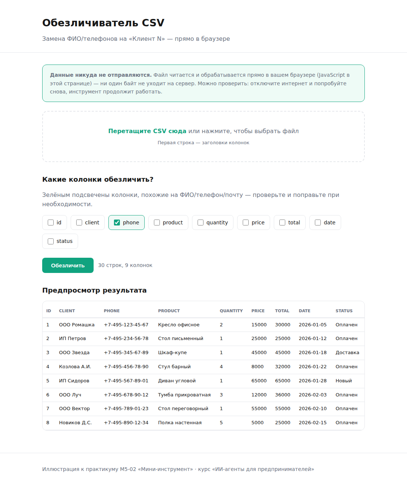
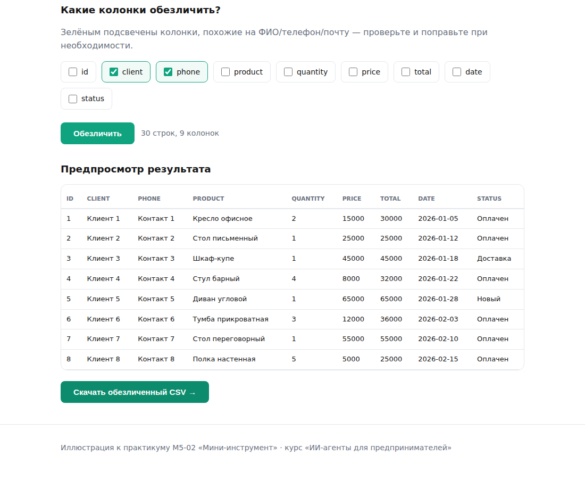

Инструмент, который находит колонки с ФИО/телефонами сам, заменяет на «Клиент 1», «Клиент 2»… и отдаёт файл обратно. То самое действие, которое курс просил делать вручную с урока М0-04 — теперь постоянно доступная страница, а не разовый скрипт.
На протяжении всего курса повторялось одно правило: «перед загрузкой в облачный ИИ — обезличь данные». До сих пор это делал агент разовым скриптом каждый раз заново. Мини-инструмент — это когда разовый скрипт превращается в постоянно доступную страницу: открыл в браузере, перетащил файл, скачал результат.
Любой CSV с колонками вроде ФИО/телефон — свой, или demo-orders.csv из модуля 1.
Отличие от лендинга и дашборда — здесь нет «истории» или «данных для показа», только одно узкое действие:
Сделай простую HTML-страницу: загрузка CSV-файла (перетаскиванием или выбором), автоматическое определение колонок, похожих на ФИО/телефон/почту (по названию заголовка), возможность вручную отметить нужные колонки чекбоксами, кнопка «Обезличить», которая заменяет значения в выбранных колонках на «Клиент 1», «Клиент 2» и так далее — одинаковые исходные значения должны получать одинаковую замену. Кнопка скачать результат. Всё должно работать локально в браузере, без отправки файла на сервер.
Загрузи demo-orders.csv (или свой файл):

На первой версии этого инструмента подсветилась только колонка phone — колонку client с реальными именами компаний инструмент не заметил.
Учебный момент (реальная находка). Причина: список подсказок для автоопределения был только на русском («фио», «клиент», «телефон»), а заголовки в файле — на английском («client», «phone»). Обезличиватель, который не может обезличить очевидную колонку с именами клиентов, — это не мелкая недоделка, а провал самой задачи инструмента. Нашлось это не потому что «код выглядел подозрительно», а потому что я реально загрузил файл и посмотрел на чекбоксы.
После исправления (добавили английские подсказки — client, name, phone, tel, mail) — жми «Обезличить»:

Проверка, которая реально важна: ООО «Ромашка» встречается в выгрузке дважды (заказ 1 и заказ 9) — оба раза должно получиться «Клиент 1». Проверил напрямую в данных — совпало.
Ещё одна находка по пути. Первая версия подписывала все обезличенные колонки как «Клиент N» — включая телефон, что выглядело странно («Клиент 1» вместо номера телефона). Поправили: подпись зависит от типа колонки («Клиент» для имён, «Контакт» для телефонов/почты, «Значение» для остального).
Открой инструмент, отключи интернет (или посмотри вкладку «Сеть» в инструментах разработчика) и всё равно загрузи файл — обезличивание должно сработать. Это не декларация, а проверяемый факт: вся обработка — в FileReader и Blob, без единого сетевого запроса.
Открыть инструмент целиком (рабочий): anonymizer.html
Такой инструмент стоит держать под рукой постоянно — попроси агента положить готовый файл в общую папку с инструментами и упомянуть про него в CLAUDE.md проекта, чтобы не искать заново каждый раз, когда нужно обезличить очередную выгрузку.
| Симптом | Причина | Решение |
|---|---|---|
| Колонка с очевидными именами не подсветилась | Список подсказок не покрывает язык заголовков (только русский или только английский) | Держи оба варианта хинтов и проверяй на реальном файле, а не на придуманном примере |
| Один и тот же клиент получает разные номера в разных строках | Счётчик замены не привязан к исходному значению | Храни маппинг «исходное значение → замена» на весь файл |
| Замена подписана нелогично (номер телефона стал «Клиент 5») | Единая подпись для всех типов колонок | Подбирай подпись по типу колонки (имя/контакт/прочее) |
| Не видно, уходят ли данные на сервер | Не проверили реально, только поверили описанию | Отключи сеть и попробуй ещё раз — рабочий локальный инструмент не заметит разницы |
Прогони через инструмент свою реальную выгрузку с именами и телефонами. Найди хотя бы одну колонку, которую автоопределение пропустило или обезличило не так, — и попроси агента поправить логику определения, а не просто отметить чекбокс вручную.
Этот урок дал не один, а сразу два реальных бага при первой же настоящей проверке: автоопределение колонки client (список подсказок был только на русском) и странная подпись «Клиент 1» для номера телефона. Ни один из них не был виден в коде на глаз — оба нашлись только потому, что инструмент реально запускался на настоящем файле с настоящими (учебными) именами и телефонами. Это, пожалуй, самая частая мысль всего курса, повторённая в последний раз: тестируй руками, а не верь описанию.